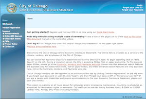

The City of Chicago is selling lots in Englewood for $1 until April 21, 2014. Here's how you get one.
Step 1) Pick a lot
Enter your address or click on the map below to find the lot(s) you would like to purchase.
Record the 14-digit Property Index Number (PIN) for your application.
Click a lot on the left to get started

Step 2) Complete the application form
Download and complete the Large Lot Pilot Program application form.

Step 3) Prove you live on the block
The City requires that you submit a copy of your deed in order to prove you already own property on the block. If you don’t have it handy, you can download a copy of your deed from the Cook County Recorder of Deeds website for $2.50.

You will need to know the PIN of your own property. You can look it up by your address on CookCountyPropertyInfo.com.

Step 4) Economic Disclosure Statement
The required Economic Disclosure Statement (EDS) can be completed online or downloaded and completed by hand. The City of Chicago website has instructions for completing the EDS.
Step 5) Request Letter of Support from the Alderman
You will need to request a Letter of Support from the Alderman of the Ward the property is in. The pilot program is within parts of Wards 6, 16, 17 and 20.

6th Ward
Alderman Roderick T. Sawyer
6th Ward Service Office
8001 S. King Drive
Chicago, IL 60619
Phone: (773) 635-0006
Email: service@6thwardchicago.com

16th Ward
Alderman Joann Thompson
5335 S Western Blvd
Chicago, IL 60609
Phone: 773-434-3399

17th Ward
Alderman Latasha R. Thomas
7811 S Racine Ave
Chicago, IL 60620
Phone: 773-723-0908
Email: ward17@cityofchicago.org

20th Ward
Alderman Willie B. Cochran
6357 S. Cottage Grove Ave
Chicago, IL 60637
Phone: (773) 955-5610
Note: 6th Ward Alderman Sawyer has announced specific requirements. Applicants must submit a copy of their large lot application, along with the proposed use of the vacant lot. The Alderman’s staff may follow-up with you if they have any questions about your proposed use.
Final Checklist
Submit your application package to the Department of Planning and Development.
Large Lot Pilot Program Application checklist:
- Large Lot Application Form
- Copy of your Deed
-
Economic Disclosure Statement Certificate of Filing (if completed online)
or
Economic Disclosure Statement (if completed manually) - Aldermanic Letter of Support
- If a non-profit organization, articles of incorporation and certificate of good standing from the State of Illinois
Submit your complete application package to:
Department of Planning and Development
Attn: Jeanne Chandler
121 N. LaSalle Street, Room 308
Chicago, IL 60602
Large Lot Pilot Program applications must be received by the close of business on April 21, 2014. Incomplete applications will not be considered.
Questions?
Read more about this program on the City of Chicago website. Please direct questions about the Large Lot Pilot Program to:
Jeanne Chandler
Department of Planning and Development
Phone: (312) 744-0605
Email: Jeanne.Chandler@cityofchicago.org
If you have questions about the LargeLots.org website, contact Demond Drummer at ddrummer@teamworkenglewood.org
Eligibility
- Applicant must own property on the same block as the lot they would like to purchase. Must provide deed with application.
- Applicant must be current on all property taxes and free of obligations to the City, including water bills and parking tickets.
- Lot must be City owned, vacant with no structures and zoned residential.
- The Applicant must be able to maintain the lot in accordance with all local building, housing and zoning codes and ordinances. The Department of Planning and Development strongly encourages potential applicants to review the ordinances pertaining to Weeds and Lot Maintenance and Fencing.
- The Applicant must submit an Economic Disclosure Statement (EDS) along with the application.
- If applicant is a non-profit organization, articles of incorporation and certificate of good standing from the State of Illinois must be provided with application.
- Churches are not eligible.
About
LargeLots.org was conceived by Demond Drummer, built by DataMade and funded by LISC Chicago with support from the Boeing Corporation, and the Knight Foundation for LISC's OpenGov for the Rest of Us project.
Our map was built using open data from Chicago and Cook County:
All the code for this site is open source and available on Github. We used the following open source tools:
- QGIS - graphic information system (GIS) desktop application
- PostGIS - geospatial database
- Bootstrap - Responsive HTML, CSS and Javascript framework
- Leaflet - javascript library interactive maps
- jQuery Address - javascript library creating RESTful URLs